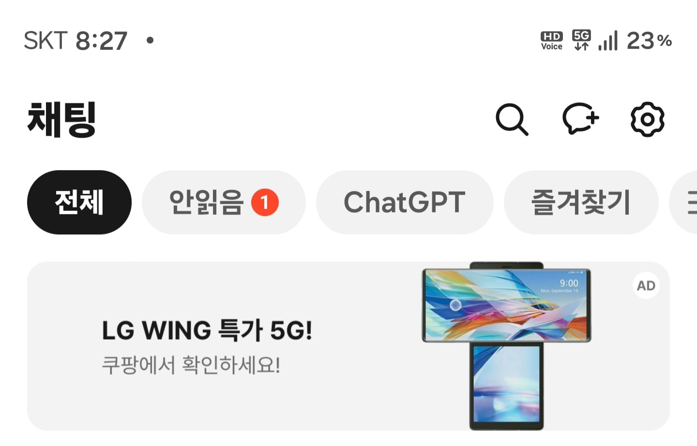

무려 화면이 두개 !!
지금 갑자기 카톡으로 광고뜸 ㄷㄷ
엘지 스마트폰도 만드네ㄷㄷ
막 이러다가 탈부착식 스마트폰 만드는거아임? ㄷㄷ

무려 화면이 두개 !!
지금 갑자기 카톡으로 광고뜸 ㄷㄷ
엘지 스마트폰도 만드네ㄷㄷ
막 이러다가 탈부착식 스마트폰 만드는거아임? ㄷㄷ
화면이 두개지요
엘지 핸드폰 만들면
삼성이랑 애플 뒤지는거 아냐?
21년에 v50 8만원에 주워와서 세컨폰으로 잘 썼음
lg폰들 중고가가 똥값이더라
DMB시절 노리고만든 폰인가
D...M..B? 하라부지 그게모에요?
그.... 최전방을 그렇게 부르지않나?
주유소가니 뜬금없이 LG페이 선택지가 뜨던데 준비하는건가?
lg페이가 있어? 새로하는건가 아님 하다 갑분 폰 사업부 닫아버려소 되살리는건가?
버튼이 없는데 화면을 돌릴 필요가 있을까?
ㅇㅖ?
lg가 다시 휴대폰사업부를 부활시킬수도 있을까? 아예 가능성 없겠지?
23분기 연속 적자 맛보고 5조원 내다버리고 접은 사업이라 치가 떨려서라도 안할듯함ㅋㅋ
다시 한다해도 엘지 성격상 싸게 내줄거 같지도않고
그정도여씀...? ㅋㅋㅋㅋㅋㅋ 엄청났구나...ㅋㅋ 그라도 주변에 꽤 쓰는사람들 있었는디 ㅋㅋㅋㅋ 다신안하겠네;;ㅋㅋㅋ
v30 잘 썼는데 좀 아쉽네
아 삼성 망했네
결국 핸드폰은 기본에 충실해야 하는듯..
저거 살 가격에 갤럭시 보급형이 더 성능좋지 않나?
스피너 기능 휴대폰!
보안업데이트도 안되는 폰...
나 저거 존나오래썼는데 뭐임 옛짤임 신종임
상소문 에디션은 대체 언제 나와
게임패드 기능이라도 잇나
와 엘지 주식 사야겠네